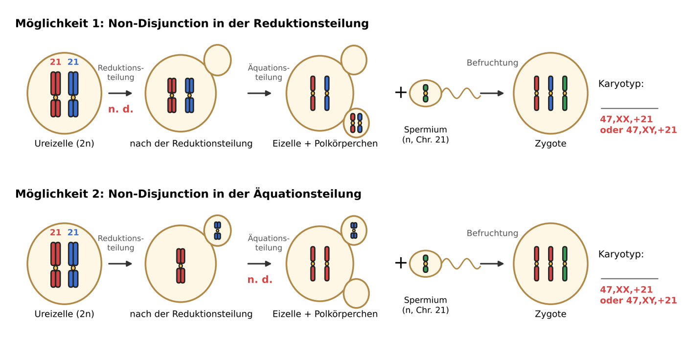

So nutzen Sie die Hilfen: Versuchen Sie es erst allein. Öffnen Sie dann Hilfe 1, danach Hilfe 2. Die Lösung dient zur Kontrolle – vergleichen Sie sie mit Ihrer eigenen Antwort und verbessern Sie diese im Hefter oder im PDF.
Aufgabe 1: Karyogramme analysieren
- Analysieren Sie die Karyogramme der Fälle A bis C, indem Sie die Tabelle ausfüllen!
Hilfe 1
Zählen Sie bei jedem Fall die Chromosomen der Paare 1–22 und die Gonosomen getrennt.
Hilfe 2
Karyotyp-Schreibweise bei einer zusätzlichen Kopie eines Autosoms: 47,XX,+21. Autosomale oder gonosomale Abweichung? Trisomie oder Monosomie?
Lösung (erst nach eigenem Versuch öffnen!)
A: 47,XX,+21; weiblich; autosomale Genommutation (Aneuploidie, Trisomie); Trisomie 21 (Down-Syndrom).
B: 45,X (45,X0); weiblich; gonosomale Genommutation (Aneuploidie, Monosomie); Turner-Syndrom.
C: 47,XXY; männlich (Y vorhanden); gonosomale Genommutation (Aneuploidie, Trisomie); Klinefelter-Syndrom.
B: 45,X (45,X0); weiblich; gonosomale Genommutation (Aneuploidie, Monosomie); Turner-Syndrom.
C: 47,XXY; männlich (Y vorhanden); gonosomale Genommutation (Aneuploidie, Trisomie); Klinefelter-Syndrom.
Aufgabe 2: Entstehung durch Non-Disjunction
- Vergleichen Sie die Folgen einer Non-Disjunction in der Reduktionsteilung und in der Äquationsteilung für die entstehenden Keimzellen!
- Ergänzen Sie das Schema (im Ausdruck) für beide Möglichkeiten: Zeichnen Sie die Chromosomen 21 in alle Zellen ein, kennzeichnen Sie den Teilungsschritt mit Non-Disjunction mit „n. d.“ und geben Sie den Karyotyp der Zygote an!
- Erklären Sie, warum beim Fall B (45,X) die Non-Disjunction sowohl bei der Eizell- als auch bei der Spermienbildung stattgefunden haben kann!
Hilfe 1
a) Abb. 1: Wie viele Keimzellen sind bei Reduktionsteilung bzw. Äquationsteilung betroffen?
Hilfe 2
b) Möglichkeit 1: Die beiden Chromosomen 21 bleiben in der Reduktionsteilung zusammen. Möglichkeit 2: Die Schwesterchromatiden eines Chromosoms 21 bleiben in der Äquationsteilung zusammen. c) Das einzige X kann von der Mutter oder vom Vater stammen. Welche Keimzelle hat dann kein Gonosom beigesteuert?
Lösung (erst nach eigenem Versuch öffnen!)
a) Non-Disjunction in der Reduktionsteilung: Die homologen Chromosomen werden nicht getrennt – alle vier Keimzellen sind betroffen (2 × n + 1, 2 × n − 1). Non-Disjunction in der Äquationsteilung: Die Schwesterchromatiden werden in einer Zelle nicht getrennt – nur zwei Keimzellen sind betroffen (n + 1, n − 1), zwei sind normal (n).
b) siehe Abbildung: In beiden Fällen erhält die Eizelle zwei Chromosomen 21 (n + 1); nach der Befruchtung mit einem normalen Spermium entsteht eine Zygote mit drei Chromosomen 21 (47,XX,+21 bzw. 47,XY,+21).
c) 45,X entsteht, wenn eine Keimzelle ohne Gonosom (n − 1) mit einer Keimzelle mit X verschmilzt. Eine Keimzelle ohne Gonosom kann bei der Eizellbildung (Non-Disjunction der X-Chromosomen) oder bei der Spermienbildung (Non-Disjunction von X und Y in Reduktionsteilung bzw. der Schwesterchromatiden in Äquationsteilung) entstehen; die andere Keimzelle liefert dann das X.
b) siehe Abbildung: In beiden Fällen erhält die Eizelle zwei Chromosomen 21 (n + 1); nach der Befruchtung mit einem normalen Spermium entsteht eine Zygote mit drei Chromosomen 21 (47,XX,+21 bzw. 47,XY,+21).
c) 45,X entsteht, wenn eine Keimzelle ohne Gonosom (n − 1) mit einer Keimzelle mit X verschmilzt. Eine Keimzelle ohne Gonosom kann bei der Eizellbildung (Non-Disjunction der X-Chromosomen) oder bei der Spermienbildung (Non-Disjunction von X und Y in Reduktionsteilung bzw. der Schwesterchromatiden in Äquationsteilung) entstehen; die andere Keimzelle liefert dann das X.

Aufgabe 3: Trisomie 21 und das Alter der Mutter
- Beschreiben Sie den in Abb. 2 dargestellten Zusammenhang!
- Erklären Sie diesen Zusammenhang mithilfe der Besonderheiten der Oogenese (Modul 3)!
Hilfe 1
Lesen Sie zuerst die Achsen. Ab welchem Alter steigt die Häufigkeit deutlich?
Hilfe 2
Oogenese: Seit wann befinden sich die Eizellen einer 40-jährigen Frau in der Prophase I?
Lösung (erst nach eigenem Versuch öffnen!)
a) Mit steigendem Alter der Mutter nimmt die Häufigkeit von Trisomie 21 zu: Bis etwa 30 Jahre bleibt sie niedrig (ca. 1 von 1000), ab etwa 35 Jahren steigt sie stark an (40 Jahre: ca. 10 von 1000, 45 Jahre: ca. 33 von 1000).
b) Die Ureizellen beginnen die Meiose schon vor der Geburt und verharren dann in der Prophase I, bis sie kurz vor dem Eisprung die Reduktionsteilung abschließen – bei einer 40-Jährigen also rund 40 Jahre lang. Mit zunehmendem Alter verlieren Proteine, die die homologen Chromosomen bzw. die Schwesterchromatiden zusammenhalten, an Funktion; auch der Spindelapparat arbeitet fehleranfälliger. Dadurch steigt das Risiko einer Non-Disjunction. Spermien werden dagegen ständig neu gebildet.
b) Die Ureizellen beginnen die Meiose schon vor der Geburt und verharren dann in der Prophase I, bis sie kurz vor dem Eisprung die Reduktionsteilung abschließen – bei einer 40-Jährigen also rund 40 Jahre lang. Mit zunehmendem Alter verlieren Proteine, die die homologen Chromosomen bzw. die Schwesterchromatiden zusammenhalten, an Funktion; auch der Spindelapparat arbeitet fehleranfälliger. Dadurch steigt das Risiko einer Non-Disjunction. Spermien werden dagegen ständig neu gebildet.
Basiswissen: Vom Diagramm zur Hypothese
- Formulieren Sie zur Ursache des in Abb. 2 dargestellten Zusammenhangs eine naturwissenschaftliche Fragestellung sowie eine Hypothese mit Gegenhypothese!
Hilfe 1
Im Blatt „Erkenntnisweg“ folgt auf die Beobachtung die Fragestellung, dann die Hypothese. Die Beobachtung ist hier Abb. 2.
Hilfe 2
Fragen Sie nach der Ursache des Zusammenhangs. Denken Sie an die Oogenese aus Modul 3: Wie lange ruhen Eizellen in der Prophase I der Reduktionsteilung? Die Gegenhypothese verneint die Hypothese.
Lösung (erst nach eigenem Versuch öffnen!)
Fragestellung: Liegt die Ursache für die Zunahme von Trisomie 21 mit dem Alter der Mutter in der langen Ruhephase der Eizellen?
Hypothese: Je länger Eizellen in der Prophase I ruhen, desto häufiger kommt es bei der Reifeteilung zu einer Non-Disjunction.
Gegenhypothese: Die Dauer der Ruhephase hat keinen Einfluss auf die Häufigkeit einer Non-Disjunction.
Hypothese: Je länger Eizellen in der Prophase I ruhen, desto häufiger kommt es bei der Reifeteilung zu einer Non-Disjunction.
Gegenhypothese: Die Dauer der Ruhephase hat keinen Einfluss auf die Häufigkeit einer Non-Disjunction.
Aufgabe 4: Chromosomenmutationen
- Ordnen Sie den Beispielen den passenden Typ der Chromosomenmutation zu!
- Ordnen Sie die Beispiele durch Ankreuzen der passenden Mutationsart zu!
Hilfe 1
Vergleichen Sie jedes Beispiel mit Abb. 3: Fehlt etwas? Ist etwas doppelt? Ist etwas umgedreht? Ist etwas auf ein anderes Chromosom gewandert?
Hilfe 2
Genmutation = Veränderung der Basensequenz eines Gens; Chromosomenmutation = Strukturveränderung; Genommutation = Anzahl verändert.
Lösung (erst nach eigenem Versuch öffnen!)
a) Katzenschrei-Syndrom: Deletion. Philadelphia-Chromosom: (reziproke) Translokation. Abschnitt doppelt: Duplikation. ABCDEFG → ABEDCFG: Inversion (Abschnitt CDE um 180° gedreht).
b) Trisomie 21: Genommutation. Katzenschrei-Syndrom: Chromosomenmutation. Austausch einer Base: Genmutation. Turner-Syndrom: Genommutation. Philadelphia-Chromosom: Chromosomenmutation. Drei Chromosomensätze (3n): Genommutation. Abschnitt doppelt: Chromosomenmutation.
b) Trisomie 21: Genommutation. Katzenschrei-Syndrom: Chromosomenmutation. Austausch einer Base: Genmutation. Turner-Syndrom: Genommutation. Philadelphia-Chromosom: Chromosomenmutation. Drei Chromosomensätze (3n): Genommutation. Abschnitt doppelt: Chromosomenmutation.
Aufgabe 5: invasive und nicht-invasive Verfahren
- Ordnen Sie die vier Verfahren aus Tab. 1 den invasiven und den nicht-invasiven Verfahren zu und begründen Sie Ihre Zuordnung!
- Erklären Sie, warum nach einem auffälligen NIPT eine Chorionzottenbiopsie oder eine Amniozentese empfohlen wird!
- Diskutieren Sie je zwei Chancen und Risiken der Pränataldiagnostik unter genetischen und ethischen Aspekten!
Hilfe 1
„Invasiv“ bedeutet „eindringend“: Wird mit einer Nadel in die Gebärmutter eingegriffen? Schauen Sie in Tab. 1 auch auf die Spalte „Aussage“.
Hilfe 2
Der NIPT untersucht zellfreie DNA-Bruchstücke im Blut der Mutter. Nur ein kleiner Teil (etwa 10 %) stammt aus der Plazenta; daraus wird eine Wahrscheinlichkeit berechnet. Für c): Denken Sie an die Vorbereitung der Eltern, an Fehlalarme, an das Fehlgeburtsrisiko und an Entscheidungen nach einem auffälligen Befund.
Lösung (erst nach eigenem Versuch öffnen!)
a) Nicht-invasiv: Ersttrimester-Screening und NIPT – kein Eingriff in die Gebärmutter, nur Ultraschall und Blutentnahme bei der Mutter. Invasiv: Chorionzottenbiopsie und Amniozentese – mit einer Hohlnadel werden Gewebe der Plazenta bzw. Fruchtwasser mit kindlichen Zellen entnommen.
b) Der NIPT liefert nur eine Wahrscheinlichkeit. Es gibt falsch-positive Ergebnisse, u. a. weil die untersuchte DNA aus der Plazenta stammt, die sich genetisch vom Kind unterscheiden kann. Erst das Karyogramm aus Zellen der Plazenta bzw. des Kindes sichert die Diagnose.
c) Chancen (Beispiele): Eltern erhalten früh Informationen und können sich auf ein Kind mit Behinderung vorbereiten (Beratung, Selbsthilfegruppen, Geburt in einer spezialisierten Klinik); ein unauffälliger Befund entlastet; der NIPT kann unnötige invasive Eingriffe vermeiden. Risiken (Beispiele): Fehlgeburtsrisiko bei invasiven Verfahren; Fehlalarme und Verunsicherung; schwierige Entscheidungen bis hin zum Schwangerschaftsabbruch; Sorge, dass der gesellschaftliche Druck auf Eltern steigt und Menschen mit Down-Syndrom weniger akzeptiert werden; viele Erkrankungen sind vorgeburtlich nicht erkennbar.
b) Der NIPT liefert nur eine Wahrscheinlichkeit. Es gibt falsch-positive Ergebnisse, u. a. weil die untersuchte DNA aus der Plazenta stammt, die sich genetisch vom Kind unterscheiden kann. Erst das Karyogramm aus Zellen der Plazenta bzw. des Kindes sichert die Diagnose.
c) Chancen (Beispiele): Eltern erhalten früh Informationen und können sich auf ein Kind mit Behinderung vorbereiten (Beratung, Selbsthilfegruppen, Geburt in einer spezialisierten Klinik); ein unauffälliger Befund entlastet; der NIPT kann unnötige invasive Eingriffe vermeiden. Risiken (Beispiele): Fehlgeburtsrisiko bei invasiven Verfahren; Fehlalarme und Verunsicherung; schwierige Entscheidungen bis hin zum Schwangerschaftsabbruch; Sorge, dass der gesellschaftliche Druck auf Eltern steigt und Menschen mit Down-Syndrom weniger akzeptiert werden; viele Erkrankungen sind vorgeburtlich nicht erkennbar.
Wahlaufgabe W1: Triple-X-Syndrom
- Ergänzen Sie das Schema (im Ausdruck) für eine Entstehung bei der Eizellbildung: Zeichnen Sie die X-Chromosomen in alle Zellen ein und kennzeichnen Sie den Fehler mit „n. d.“!
- Erklären Sie, ob der Karyotyp 47,XXX auch durch einen Fehler bei der Spermienbildung entstehen kann!
Hilfe 1
Eine Zygote mit XXX entsteht z. B. aus einer Eizelle mit XX und einem Spermium mit X – oder aus einer Eizelle mit X und einem Spermium mit XX.
Hilfe 2
Beim Mann: Kann eine Non-Disjunction in der Reduktionsteilung ein Spermium mit XX liefern? Bedenken Sie, dass in Reduktionsteilung X und Y getrennt werden.
Lösung (erst nach eigenem Versuch öffnen!)
a) Eizellbildung, Möglichkeit 1 (n. d. in Reduktionsteilung): Beide X-Chromosomen bleiben zusammen, die Eizelle erhält XX. Möglichkeit 2 (n. d. in Äquationsteilung): Die Schwesterchromatiden eines X werden nicht getrennt, die Eizelle erhält XX. Jeweils + Spermium mit X → 47,XXX.
b) Ja: Werden in der Äquationsteilung des Mannes die Schwesterchromatiden des X nicht getrennt, entsteht ein Spermium mit XX; mit einer Eizelle (X) ergibt sich 47,XXX. Eine Non-Disjunction in der Reduktionsteilung des Mannes liefert dagegen XY oder kein Gonosom, also kein XX-Spermium.
b) Ja: Werden in der Äquationsteilung des Mannes die Schwesterchromatiden des X nicht getrennt, entsteht ein Spermium mit XX; mit einer Eizelle (X) ergibt sich 47,XXX. Eine Non-Disjunction in der Reduktionsteilung des Mannes liefert dagegen XY oder kein Gonosom, also kein XX-Spermium.
Wahlaufgabe W2: Turner- und Klinefelter-Syndrom
- Tragen Sie in das Schema (im Ausdruck) jeweils das X- und das Y-Chromosom ein, sodass beide Möglichkeiten zum Karyotyp 45,X führen! Kennzeichnen Sie den Teilungsschritt mit Non-Disjunction mit „n. d.“!
- Bei einem Mann mit Klinefelter-Syndrom (47,XXY) zeigen genetische Untersuchungen, dass seine beiden X-Chromosomen genetisch vollkommen identisch sind. Leiten Sie ab, bei welchem Elternteil und in welcher Reifeteilung die Non-Disjunction stattgefunden hat (vereinfacht: ohne Crossing-over)!
- Bei einem Mädchen mit Turner-Syndrom (45,X) zeigt eine genetische Untersuchung, dass ihr einziges X-Chromosom vom Vater stammt. Leiten Sie ab, bei welchem Elternteil die Non-Disjunction stattgefunden hat, und begründen Sie, warum sich hier nicht entscheiden lässt, in welcher Reifeteilung sie stattfand!
Hilfe 1
a) Ein Spermium ohne Gonosom + Eizelle mit X = 45,X. b) Ein Mann besitzt ein Y-Chromosom. Von welchem Elternteil stammt es – und woher kommen dann beide X-Chromosomen? c) Das X stammt vom Vater – welche Keimzelle hat dann kein Gonosom geliefert?
Hilfe 2
a) Möglichkeit 1: X und Y werden in der Reduktionsteilung nicht getrennt. Möglichkeit 2: Die Schwesterchromatiden von X oder Y werden in der Äquationsteilung nicht getrennt. b) Genetisch vollkommen identisch (ohne Crossing-over) sind nur die beiden Schwesterchromatiden eines Chromosoms. In welcher Reifeteilung werden sie getrennt? c) Ob die Eizelle ohne X durch Nicht-Trennung der homologen X-Chromosomen oder der Schwesterchromatiden entstand – kann man das an einem fehlenden Chromosom erkennen?
Lösung (erst nach eigenem Versuch öffnen!)
a) (1) n. d. in der Reduktionsteilung: X und Y gelangen gemeinsam in eine Zelle, die andere Zelle erhält kein Gonosom → zwei Spermien ohne Gonosom (und zwei mit XY). (2) n. d. in der Äquationsteilung: Nach normaler Reduktionsteilung werden z. B. die Schwesterchromatiden des Y nicht getrennt → ein Spermium mit YY und ein Spermium ohne Gonosom (die beiden anderen Spermien tragen je ein X). In beiden Fällen ergibt ein Spermium ohne Gonosom + Eizelle mit X die Zygote 45,X.
b) Da der Mann ein Y-Chromosom besitzt, stammt dieses vom Vater; beide X-Chromosomen stammen von der Mutter. Genetisch vollkommen identisch sind – wenn man Crossing-over vernachlässigt – nur die beiden Schwesterchromatiden eines Chromosoms. Die Non-Disjunction fand also in der Äquationsteilung der Oogenese statt: Die Schwesterchromatiden des X-Chromosoms wurden nicht getrennt, die Eizelle erhielt zwei identische X-Chromosomen.
c) Das einzige X stammt vom Vater (normales Spermium mit X). Die Eizelle der Mutter enthielt also kein X-Chromosom (n − 1): Die Non-Disjunction fand bei der Mutter statt. Ob dabei in der Reduktionsteilung die homologen X-Chromosomen oder in der Äquationsteilung die Schwesterchromatiden nicht getrennt wurden, lässt sich nicht entscheiden: In beiden Fällen gelangen alle X-Chromatiden in Polkörperchen – an einem fehlenden Chromosom kann man nicht erkennen, ob es von zwei verschiedenen oder von identischen Chromatiden stammt.
b) Da der Mann ein Y-Chromosom besitzt, stammt dieses vom Vater; beide X-Chromosomen stammen von der Mutter. Genetisch vollkommen identisch sind – wenn man Crossing-over vernachlässigt – nur die beiden Schwesterchromatiden eines Chromosoms. Die Non-Disjunction fand also in der Äquationsteilung der Oogenese statt: Die Schwesterchromatiden des X-Chromosoms wurden nicht getrennt, die Eizelle erhielt zwei identische X-Chromosomen.
c) Das einzige X stammt vom Vater (normales Spermium mit X). Die Eizelle der Mutter enthielt also kein X-Chromosom (n − 1): Die Non-Disjunction fand bei der Mutter statt. Ob dabei in der Reduktionsteilung die homologen X-Chromosomen oder in der Äquationsteilung die Schwesterchromatiden nicht getrennt wurden, lässt sich nicht entscheiden: In beiden Fällen gelangen alle X-Chromatiden in Polkörperchen – an einem fehlenden Chromosom kann man nicht erkennen, ob es von zwei verschiedenen oder von identischen Chromatiden stammt.
Wahlaufgabe W3: Polyploidie bei Pflanzen
- Recherchieren Sie, welche Vorteile polyploide Kulturpflanzen haben!
- Ein Mensch mit Trisomie 21 ist lebensfähig, ein Embryo mit Triploidie (3n = 69) dagegen nicht – obwohl bei der Triploidie das Mengenverhältnis der Autosomen untereinander unverändert bleibt. Vergleichen Sie Trisomie 21 und Triploidie mithilfe der Gendosis und stellen Sie eine begründete Hypothese auf, warum die Triploidie beim Menschen nicht mit dem Leben vereinbar ist!
Hilfe 1
a) Suchbegriffe: Polyploidie Kulturpflanzen Vorteile. b) Schreiben Sie für Trisomie 21 und Triploidie jeweils auf: Wie oft liegen die Gene von Chromosom 21, die übrigen Autosomen und die Gonosomen vor?
Hilfe 2
b) Trisomie 21: nur die Gene eines Chromosoms dreifach – das Verhältnis zu allen anderen Genen ist verschoben. Triploidie: alle Autosomen dreifach – das Verhältnis der Autosomen untereinander bleibt gleich. Überlegen Sie: Was ändert sich trotzdem (Gesamtmenge aller Genprodukte, Verhältnis zu den Gonosomen)?
Lösung (erst nach eigenem Versuch öffnen!)
a) Polyploide Kulturpflanzen haben oft größere Zellen und dadurch größere Früchte, Blätter oder Körner, sind teilweise robuster und ertragreicher.
b) Bei Trisomie 21 liegen nur die Gene von Chromosom 21 dreifach vor; das Verhältnis zu allen anderen Genen ist verschoben, aber nur für ein kleines Chromosom mit vergleichsweise wenigen Genen. Bei der Triploidie bleibt das Verhältnis der Autosomen untereinander gleich, aber alle Gene liegen dreifach vor. Mögliche Hypothesen (eine begründete Hypothese genügt): Die Gesamtmenge aller Genprodukte ist um die Hälfte erhöht, sodass die genau abgestimmte Regulation vieler Entwicklungsvorgänge gestört ist (Gendosis betrifft alle Gene gleichzeitig). Außerdem ist das Verhältnis zwischen Autosomen und Gonosomen verändert (z. B. 69,XXY: drei Sätze Autosomen, aber nur ein Y). Pflanzen sind offenbar weniger empfindlich gegenüber einer veränderten Gendosis als die stark regulierte Embryonalentwicklung des Menschen.
b) Bei Trisomie 21 liegen nur die Gene von Chromosom 21 dreifach vor; das Verhältnis zu allen anderen Genen ist verschoben, aber nur für ein kleines Chromosom mit vergleichsweise wenigen Genen. Bei der Triploidie bleibt das Verhältnis der Autosomen untereinander gleich, aber alle Gene liegen dreifach vor. Mögliche Hypothesen (eine begründete Hypothese genügt): Die Gesamtmenge aller Genprodukte ist um die Hälfte erhöht, sodass die genau abgestimmte Regulation vieler Entwicklungsvorgänge gestört ist (Gendosis betrifft alle Gene gleichzeitig). Außerdem ist das Verhältnis zwischen Autosomen und Gonosomen verändert (z. B. 69,XXY: drei Sätze Autosomen, aber nur ein Y). Pflanzen sind offenbar weniger empfindlich gegenüber einer veränderten Gendosis als die stark regulierte Embryonalentwicklung des Menschen.
Wahlaufgabe W4: Leben mit Down-Syndrom und die Debatte um den Bluttest
- Erklären Sie mithilfe der Gendosis, warum ein drittes Chromosom 21 viele Merkmale gleichzeitig beeinflusst!
- Beurteilen Sie, ob der NIPT für alle Schwangeren von der Krankenkasse bezahlt werden sollte! Berücksichtigen Sie dabei die Sicht der werdenden Eltern, der Menschen mit Down-Syndrom und der Gesellschaft und beziehen Sie das Interview mit Albin und seiner Familie ein!
Hilfe 1
a) Wie viele Gene liegen auf Chromosom 21 – und was bedeutet eine dritte Kopie für die Menge der Genprodukte? b) Trennen Sie Fakten (Was kann der Test? Wie oft wird er genutzt? Was folgt oft aus einer Diagnose?) von Werten (Was ist Ihnen wichtig – und warum?). Achten Sie im Interview darauf, was Albin und seiner Familie selbst wichtig ist.
Hilfe 2
a) Gendosis: Auf Chromosom 21 liegen über 200 Gene. Bei drei Kopien werden mehr Genprodukte (Proteine) gebildet als bei zwei. b) Mögliche Werte sind Selbstbestimmung der Eltern, Schutz des ungeborenen Lebens, Gleichwertigkeit und Inklusion von Menschen mit Behinderung sowie gleicher Zugang unabhängig vom Einkommen. Wägen Sie mindestens zwei Werte gegeneinander ab und kommen Sie zu einem begründeten Urteil. Das Interview zeigt die Perspektive eines Menschen mit Down-Syndrom und seiner Familie.
Lösung (erst nach eigenem Versuch öffnen!)
a) Auf Chromosom 21 liegen viele Gene. Bei einer Trisomie werden diese Gene dreifach abgelesen, es entstehen mehr von den entsprechenden Proteinen. Das Gleichgewicht vieler Stoffwechselvorgänge und Entwicklungsprozesse ist gestört, deshalb sind viele Merkmale gleichzeitig betroffen.
b) Keine Musterlösung – bewertet wird die Begründung. Eine gute Antwort (1) stellt Fakten richtig dar: Der NIPT liefert nur eine Wahrscheinlichkeit, ist für das Kind risikofrei und wird inzwischen von fast jeder zweiten Schwangeren genutzt; nach einer sicheren Diagnose entscheiden sich die meisten Eltern für einen Abbruch. (2) Sie nennt Argumente beider Seiten, z. B. dafür: weniger invasive Eingriffe, informierte Entscheidung, gleicher Zugang unabhängig vom Einkommen; dagegen: faktisches Screening auf Trisomie 21, Entscheidungsdruck, falsch-positive Befunde vor allem bei jungen Schwangeren, Signal an Menschen mit Down-Syndrom, nicht willkommen zu sein. (3) Sie berücksichtigt die drei Perspektiven (Eltern, Menschen mit Down-Syndrom, Gesellschaft) und bezieht das Interview ein (z. B. Albins Schulabschluss, Ausbildung und Hobbys als Beispiel für ein selbstbestimmtes Leben mit Down-Syndrom) und (4) kommt zu einem eigenen, begründeten Urteil – z. B. Kassenleistung nur nach ausführlicher, ergebnisoffener Beratung.
Video-Check (freiwillig): „Ethik2go – Pränatale Diagnostik“ (katholisch.de)
1. Absender: katholisch.de ist ein Portal der katholischen Kirche, die den Schutz des ungeborenen Lebens besonders betont – eine legitime, aber erkennbare Haltung.
2. Fachliche Vermischung: Der NIPT zählt nur, ob bestimmte Chromosomen (13, 18, 21) zu häufig vorkommen. Einzelne Gene – etwa für die Augenfarbe – untersucht er nicht; das wäre eine ganz andere Untersuchung. Das Geschlecht lässt sich zwar am Y-Chromosom erkennen, ist aber nicht Teil der Kassenleistung und darf nach dem Gendiagnostikgesetz erst nach der 12. Schwangerschaftswoche mitgeteilt werden. Der Schluss „dann testet man bald alles“ ist ein Dammbruch-Argument, kein Fakt.
3. Thema verfehlt: Dass der NIPT nicht 100 % sicher ist, stimmt – darum geht es bei der Kassenzulassung aber nicht. Der Test soll Schwangeren mit erhöhtem Risiko (z. B. ab etwa 40 Jahren) viele invasive Untersuchungen mit Fehlgeburtsrisiko ersparen; nur ein auffälliger Befund wird invasiv abgeklärt.
4. Schiefer Vergleich: Der Vergleich mit einem Test auf „Schwerverbrecher“ passt nicht – Kriminalität ist kein genetisch testbares Merkmal, eine Trisomie dagegen schon.
5. „Man kann sich nicht vorbereiten“: Teilweise falsch. Eltern können sich informieren, sich beraten lassen (Anspruch auf psychosoziale Beratung), Kontakt zu Elterninitiativen aufnehmen und die Geburt in einer Klinik mit Kinderkardiologie planen (etwa jedes zweite Kind mit Trisomie 21 hat einen Herzfehler). Richtig ist: Wie das Leben mit einem Kind wird, lässt sich – mit oder ohne Behinderung – nie ganz planen.
6. Was fehlt: die Perspektive der Schwangeren, die als Risikoschwangere Angst hat und Gewissheit möchte.
b) Keine Musterlösung – bewertet wird die Begründung. Eine gute Antwort (1) stellt Fakten richtig dar: Der NIPT liefert nur eine Wahrscheinlichkeit, ist für das Kind risikofrei und wird inzwischen von fast jeder zweiten Schwangeren genutzt; nach einer sicheren Diagnose entscheiden sich die meisten Eltern für einen Abbruch. (2) Sie nennt Argumente beider Seiten, z. B. dafür: weniger invasive Eingriffe, informierte Entscheidung, gleicher Zugang unabhängig vom Einkommen; dagegen: faktisches Screening auf Trisomie 21, Entscheidungsdruck, falsch-positive Befunde vor allem bei jungen Schwangeren, Signal an Menschen mit Down-Syndrom, nicht willkommen zu sein. (3) Sie berücksichtigt die drei Perspektiven (Eltern, Menschen mit Down-Syndrom, Gesellschaft) und bezieht das Interview ein (z. B. Albins Schulabschluss, Ausbildung und Hobbys als Beispiel für ein selbstbestimmtes Leben mit Down-Syndrom) und (4) kommt zu einem eigenen, begründeten Urteil – z. B. Kassenleistung nur nach ausführlicher, ergebnisoffener Beratung.
Video-Check (freiwillig): „Ethik2go – Pränatale Diagnostik“ (katholisch.de)
1. Absender: katholisch.de ist ein Portal der katholischen Kirche, die den Schutz des ungeborenen Lebens besonders betont – eine legitime, aber erkennbare Haltung.
2. Fachliche Vermischung: Der NIPT zählt nur, ob bestimmte Chromosomen (13, 18, 21) zu häufig vorkommen. Einzelne Gene – etwa für die Augenfarbe – untersucht er nicht; das wäre eine ganz andere Untersuchung. Das Geschlecht lässt sich zwar am Y-Chromosom erkennen, ist aber nicht Teil der Kassenleistung und darf nach dem Gendiagnostikgesetz erst nach der 12. Schwangerschaftswoche mitgeteilt werden. Der Schluss „dann testet man bald alles“ ist ein Dammbruch-Argument, kein Fakt.
3. Thema verfehlt: Dass der NIPT nicht 100 % sicher ist, stimmt – darum geht es bei der Kassenzulassung aber nicht. Der Test soll Schwangeren mit erhöhtem Risiko (z. B. ab etwa 40 Jahren) viele invasive Untersuchungen mit Fehlgeburtsrisiko ersparen; nur ein auffälliger Befund wird invasiv abgeklärt.
4. Schiefer Vergleich: Der Vergleich mit einem Test auf „Schwerverbrecher“ passt nicht – Kriminalität ist kein genetisch testbares Merkmal, eine Trisomie dagegen schon.
5. „Man kann sich nicht vorbereiten“: Teilweise falsch. Eltern können sich informieren, sich beraten lassen (Anspruch auf psychosoziale Beratung), Kontakt zu Elterninitiativen aufnehmen und die Geburt in einer Klinik mit Kinderkardiologie planen (etwa jedes zweite Kind mit Trisomie 21 hat einen Herzfehler). Richtig ist: Wie das Leben mit einem Kind wird, lässt sich – mit oder ohne Behinderung – nie ganz planen.
6. Was fehlt: die Perspektive der Schwangeren, die als Risikoschwangere Angst hat und Gewissheit möchte.
Wahlaufgabe W5: Polkörperdiagnostik
- Leiten Sie ab, in welcher Reifeteilung der Oogenese ein Fehler aufgetreten ist und welche Gonosomen die Eizelle enthält! Stellen Sie Ihre Überlegung in einer beschrifteten Skizze dar (nur Gonosomen)!
Hilfe 1
Bei der Oogenese entstehen aus einer Urkeimzelle eine Eizelle und drei Polkörperchen. Das erste Polkörperchen entsteht in der Reduktionsteilung, das zweite in der Äquationsteilung; das erste kann sich noch einmal teilen.
Hilfe 2
Ein normales Polkörperchen enthält 22 + X. Welches Polkörperchen enthält zu viel? Wenn es zwei X-Chromatiden enthält, fehlt der Partnerzelle das X.
Lösung (erst nach eigenem Versuch öffnen!)
Reduktionsteilung verlief normal: Die homologen X-Chromosomen wurden getrennt; das erste Polkörperchen (22 + X) teilte sich in zwei Polkörperchen mit je 22 + X. In der Äquationsteilung der Eizelle wurden die Schwesterchromatiden des X-Chromosoms nicht getrennt (Non-Disjunction): Das zweite Polkörperchen erhielt beide (22 + XX), die Eizelle enthält kein Gonosom (22 + 0). Nach einer Befruchtung mit einem X-Spermium entstünde ein Kind mit Turner-Syndrom (45,X), mit einem Y-Spermium wäre die Zygote nicht lebensfähig.
Wahlaufgabe W6: Down-Syndrom in mehreren Generationen
- Beschreiben Sie die Abweichungen bei Mutter und Tochter und benennen Sie die Art der Mutation, die das veränderte Chromosom zeigt!
- Erklären Sie, warum die Mutter gesund ist, die Tochter aber das Down-Syndrom hat, obwohl sie 46 Chromosomen besitzt!
- Stellen Sie eine begründete Vermutung auf, wie bei der Eizellbildung der Mutter eine Eizelle mit diesem Chromosomenbestand entstehen konnte!
Hilfe 1
a) Zählen Sie die Chromosomen 14 und 21 bei Mutter und Tochter. Woraus besteht das veränderte Chromosom (Farben!)? Vergleichen Sie mit Abb. 3 (Typen von Chromosomenmutationen). b) Entscheidend ist nicht die Anzahl der Chromosomen, sondern die Menge an Erbinformation: Wie oft liegt das Material von Chromosom 21 jeweils vor?
Hilfe 2
a) Ein Chromosom 21 ist an ein Chromosom 14 angeheftet: Ein Chromosomenstück wurde auf ein nicht homologes Chromosom übertragen. b) Mutter: Chromosom-21-Material zweifach, Tochter: dreifach. c) Welche Chromosomen kann die Mutter in der Reduktionsteilung gemeinsam in eine Eizelle weitergeben?
Lösung (erst nach eigenem Versuch öffnen!)
a) Die Mutter besitzt ein normales Chromosom 14, ein normales Chromosom 21 und ein verändertes Chromosom, das aus Chromosom 14 und einem angehefteten Chromosom 21 besteht. Ihr fehlt deshalb ein freies Chromosom 21 (45 Chromosomen). Die Tochter besitzt dasselbe veränderte Chromosom und zusätzlich zwei normale Chromosomen 21 (46 Chromosomen). Es handelt sich um eine Translokation (Chromosomenmutation): Ein Chromosom 21 wurde auf das nicht homologe Chromosom 14 übertragen.
b) Für die Merkmalsausbildung zählt die Menge an Erbinformation, nicht die Zahl der Chromosomen. Bei der Mutter liegt das Material von Chromosom 14 und von Chromosom 21 jeweils zweifach vor – es fehlt nichts und es ist nichts zu viel (ausgeglichene Translokation), deshalb ist sie gesund. Bei der Tochter liegt das Material von Chromosom 21 dreifach vor (zwei freie Chromosomen 21 und das angeheftete Chromosom 21). Das entspricht einer Trisomie 21 (Translokationstrisomie), obwohl sie nur 46 Chromosomen besitzt.
c) Bei der Eizellbildung werden in der Reduktionsteilung die homologen Chromosomen verteilt. Das veränderte Chromosom 14/21 und das freie Chromosom 21 sind nicht miteinander gepaart und können deshalb gemeinsam in dieselbe Zelle gelangen. So entsteht eine Eizelle mit Chromosom 14/21 und freiem Chromosom 21. Wird sie von einem normalen Spermium (mit Chromosom 14 und 21) befruchtet, erhält die Zygote dreimal Chromosom-21-Material. Weil die Mutter solche Eizellen immer wieder bilden kann, tritt das Down-Syndrom in der Familie gehäuft auf.
b) Für die Merkmalsausbildung zählt die Menge an Erbinformation, nicht die Zahl der Chromosomen. Bei der Mutter liegt das Material von Chromosom 14 und von Chromosom 21 jeweils zweifach vor – es fehlt nichts und es ist nichts zu viel (ausgeglichene Translokation), deshalb ist sie gesund. Bei der Tochter liegt das Material von Chromosom 21 dreifach vor (zwei freie Chromosomen 21 und das angeheftete Chromosom 21). Das entspricht einer Trisomie 21 (Translokationstrisomie), obwohl sie nur 46 Chromosomen besitzt.
c) Bei der Eizellbildung werden in der Reduktionsteilung die homologen Chromosomen verteilt. Das veränderte Chromosom 14/21 und das freie Chromosom 21 sind nicht miteinander gepaart und können deshalb gemeinsam in dieselbe Zelle gelangen. So entsteht eine Eizelle mit Chromosom 14/21 und freiem Chromosom 21. Wird sie von einem normalen Spermium (mit Chromosom 14 und 21) befruchtet, erhält die Zygote dreimal Chromosom-21-Material. Weil die Mutter solche Eizellen immer wieder bilden kann, tritt das Down-Syndrom in der Familie gehäuft auf.
Wahlaufgabe W7: Woher stammt das zusätzliche Chromosom?
- Ermitteln Sie für die Kinder A bis C jeweils, von welchem Elternteil das zusätzliche Chromosom 21 stammt und in welcher Reifeteilung die Non-Disjunction stattgefunden hat! Begründen Sie Ihre Entscheidung jeweils damit, ob die homologen Chromosomen oder die Schwesterchromatiden nicht getrennt wurden!
- Auf Chromosom 21 liegt das Gen für das Enzym SOD1, das schädliche Sauerstoffradikale in der Zelle abbaut. In Zellen von Menschen mit Trisomie 21 ist die Menge dieses Enzyms um bis zu 50 % erhöht. Erklären Sie diesen Befund mithilfe der Gendosis!
- Abb. 6 zeigt die Gonosomen zweier weiterer Kinder. Ermitteln Sie für Kind D (47,XXY) und Kind E (47,XXX), bei welchem Elternteil und in welcher Reifeteilung die Non-Disjunction stattgefunden hat, und benennen Sie jeweils, was nicht getrennt wurde! Begründen Sie, warum ein Spermium mit X- und Y-Chromosom nur auf eine einzige Weise entstehen kann!
Hilfe 1
a) Vergleichen Sie die Bandenmuster: Welche zwei Chromosomen des Kindes stammen vom selben Elternteil? Sind diese beiden gleich (identisch) oder verschieden? c) Der Vater besitzt nur ein X-Chromosom und ein Y-Chromosom. Welche Gonosomen von Kind D und E stammen vom Vater?
Hilfe 2
a) Zwei verschiedene Chromosomen eines Elternteils (z. B. M1 und M2) = beide homologen Chromosomen wurden nicht getrennt → Reduktionsteilung. Zwei identische Chromosomen (z. B. M2 und M2) = die Schwesterchromatiden eines Chromosoms wurden nicht getrennt → Äquationsteilung. b) Wie viele Kopien des SOD1-Gens besitzt eine Zelle mit Trisomie 21? c) X und Y des Vaters verhalten sich in der Reduktionsteilung wie ein Paar homologer Chromosomen. Zwei identische X vom Vater können nur Schwesterchromatiden seines einzigen X-Chromosoms sein.
Lösung (erst nach eigenem Versuch öffnen!)
a) Kind A (V1, M1, M2): Das zusätzliche Chromosom stammt von der Mutter; sie hat beide verschiedenen homologen Chromosomen weitergegeben → Non-Disjunction in der Reduktionsteilung der Mutter (homologe Chromosomen nicht getrennt).
Kind B (V2, M2, M2): von der Mutter; zwei identische Chromosomen M2 → Non-Disjunction in der Äquationsteilung der Mutter (Schwesterchromatiden nicht getrennt).
Kind C (V1, V1, M1): vom Vater; zwei identische Chromosomen V1 → Non-Disjunction in der Äquationsteilung des Vaters (Schwesterchromatiden nicht getrennt).
b) Bei Trisomie 21 liegt das SOD1-Gen dreimal statt zweimal vor (erhöhte Gendosis). Es wird entsprechend häufiger abgelesen, es entsteht mehr Enzym – rechnerisch das 1,5-Fache, also bis zu 50 % mehr. Ein solches Ungleichgewicht vieler Genprodukte von Chromosom 21 erklärt, warum viele Merkmale gleichzeitig verändert sind.
c) Kind D (X1 der Mutter, X und Y vom Vater): Das Spermium enthielt X und Y → Non-Disjunction in der Reduktionsteilung des Vaters: Die Gonosomen X und Y (sie verhalten sich wie homologe Chromosomen) wurden nicht getrennt. Ein Spermium mit X und Y kann nur so entstehen, denn in der Äquationsteilung liegen X und Y bereits in verschiedenen Zellen; dort könnten nur Schwesterchromatiden (XX oder YY) zusammenbleiben.
Kind E (X2 der Mutter, zweimal das identische X vom Vater): Das Spermium enthielt zwei identische X → Non-Disjunction in der Äquationsteilung des Vaters: Die Schwesterchromatiden seines X-Chromosoms wurden nicht getrennt. Eine Triple-X-Tochter kann also auch durch einen Fehler bei der Spermienbildung entstehen.
Kind B (V2, M2, M2): von der Mutter; zwei identische Chromosomen M2 → Non-Disjunction in der Äquationsteilung der Mutter (Schwesterchromatiden nicht getrennt).
Kind C (V1, V1, M1): vom Vater; zwei identische Chromosomen V1 → Non-Disjunction in der Äquationsteilung des Vaters (Schwesterchromatiden nicht getrennt).
b) Bei Trisomie 21 liegt das SOD1-Gen dreimal statt zweimal vor (erhöhte Gendosis). Es wird entsprechend häufiger abgelesen, es entsteht mehr Enzym – rechnerisch das 1,5-Fache, also bis zu 50 % mehr. Ein solches Ungleichgewicht vieler Genprodukte von Chromosom 21 erklärt, warum viele Merkmale gleichzeitig verändert sind.
c) Kind D (X1 der Mutter, X und Y vom Vater): Das Spermium enthielt X und Y → Non-Disjunction in der Reduktionsteilung des Vaters: Die Gonosomen X und Y (sie verhalten sich wie homologe Chromosomen) wurden nicht getrennt. Ein Spermium mit X und Y kann nur so entstehen, denn in der Äquationsteilung liegen X und Y bereits in verschiedenen Zellen; dort könnten nur Schwesterchromatiden (XX oder YY) zusammenbleiben.
Kind E (X2 der Mutter, zweimal das identische X vom Vater): Das Spermium enthielt zwei identische X → Non-Disjunction in der Äquationsteilung des Vaters: Die Schwesterchromatiden seines X-Chromosoms wurden nicht getrennt. Eine Triple-X-Tochter kann also auch durch einen Fehler bei der Spermienbildung entstehen.
Sichern: Fachsprache und Denkfallen
Erst selbst erklären, dann vergleichen. Übernehmen Sie die Begriffe in Ihr Glossar.
Lösung: Fachbegriffe
- Genommutation: Veränderung der Chromosomenzahl, z. B. Trisomie 21.
- Chromosomenmutation: Veränderung der Struktur eines Chromosoms, z. B. Deletion oder Translokation.
- Aneuploidie: Einzelne Chromosomen fehlen oder sind zusätzlich vorhanden (z. B. Trisomie, Monosomie).
- Non-Disjunction: Nicht-Trennung homologer Chromosomen (Reduktionsteilung) oder von Schwesterchromatiden (Äquationsteilung).
- Translokation: Ein Chromosomenabschnitt ist an ein anderes, nicht homologes Chromosom angelagert.
- invasiv / nicht-invasiv: Pränataldiagnostik mit Eingriff in die Gebärmutter (Diagnose, geringes Fehlgeburtsrisiko) / ohne Eingriff (Wahrscheinlichkeit, kein Risiko).
Lösung: Denkfallen
- „Trisomie 21 ist eine Genmutation.“ – falsch – Sie ist eine Genommutation: Das ganze Chromosom 21 liegt dreifach vor.
- „Trisomie 21 wird meist von den Eltern vererbt.“ – falsch – Die freie Trisomie 21 entsteht meist neu durch Non-Disjunction bei der Keimzellbildung, meist in der Eizelle.
- „Menschen mit Down-Syndrom haben immer 47 Chromosomen.“ – falsch – Bei einer Translokationstrisomie ist das dritte Chromosom 21 an ein anderes Chromosom angelagert. Die Person hat 46 Chromosomen, das Material von Chromosom 21 liegt aber dreifach vor.
- „Ein auffälliger Bluttest (NIPT) ist eine sichere Diagnose.“ – falsch – Der NIPT liefert eine Wahrscheinlichkeit. Erst ein Karyogramm nach Amniozentese oder Chorionzottenbiopsie sichert die Diagnose.
Fallakte · Befund Kapitel 5
Familie Sommer · Ein Karyogramm für das Baby – Kapitel 5: „Das Ergebnis“
- Art der Mutation (Fachbegriff) und Bedeutung des Karyotyps 47,XX,+21
- Entstehung: Wann und wie kann das zusätzliche Chromosom 21 entstanden sein?
- Warum ist Ben nicht betroffen?
- Rolle von Sarahs Alter
- Warum reichte der Bluttest (NIPT) allein nicht aus? (Material A5)
Tipp
Lesen Sie das Kapitel 5 der Fallakte noch einmal und suchen Sie in den Pflichtaufgaben dieses Moduls die passenden Fachbegriffe.
Lösung (erst nach eigenem Versuch öffnen!)
- Genommutation (numerische Chromosomenaberration): 47 Chromosomen, zwei X-Chromosomen (Mädchen), Chromosom 21 dreifach vorhanden.
- Durch Non-Disjunction: In der Reduktionsteilung wurden die homologen Chromosomen 21 nicht getrennt oder in der Äquationsteilung die Schwesterchromatiden. Eine Keimzelle (meist die Eizelle) erhielt 24 Chromosomen; nach der Befruchtung mit einer normalen Keimzelle entstand eine Zygote mit 47 Chromosomen.
- Ben ist aus einer anderen Eizelle und einem anderen Spermium entstanden. Die Non-Disjunction betraf nur die Keimzelle, aus der seine Schwester entstanden ist.
- Mit zunehmendem Alter der Mutter steigt die Wahrscheinlichkeit für eine Non-Disjunction in der Eizelle, weil die Eizellen jahrzehntelang in der Reduktionsteilung ruhen. Bei einer freien Trisomie 21 ist das Risiko für weitere Kinder deshalb vor allem altersabhängig.
- Der NIPT ist ein nicht-invasives Verfahren und liefert nur eine Wahrscheinlichkeit, keine Diagnose. Ein auffälliges Ergebnis muss durch ein invasives Verfahren (hier die Amniozentese) bestätigt werden, bei dem aus kindlichen Zellen ein Karyogramm erstellt wird.